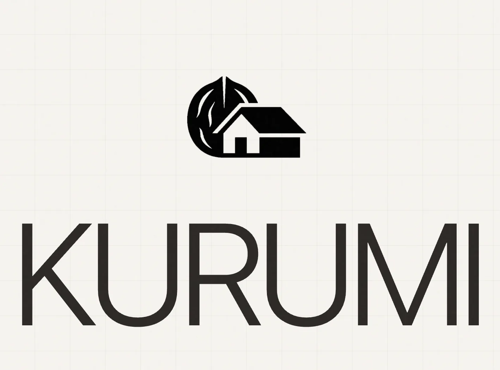
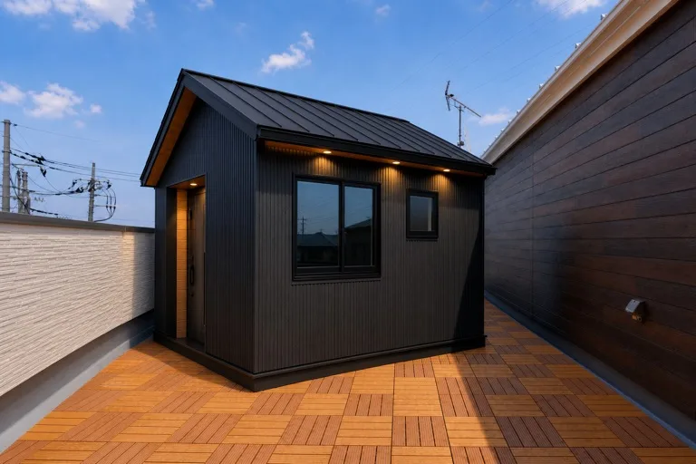

組み変える小屋、
はじめよう。
Kurumi | モジュール小屋キット

Scroll
変幻自在のモジュール建築
Module & Joint System
910×910×60mm
日本の伝統的な建築技法を継承する規格。 独自のジョイントシステムにより、釘を一本も使わず、何度でも着脱・再構築が可能。 間取りの変更も、工具なしで自由自在に行えます。
- Material Premium Walnut & Ash
- Assembly Tool-less Joint
- Durability Semi-permanent

A-TYPE JOINT
60MM THICKNESS
NO DRILL

WORKSPACE 01
アトリエ構成
スマホから、
空間をカンタンに設計。
まるでMinecraftのブロックを積むように、直感的に間取りを設計。 誰でも簡単に操作できるスマホアプリから、そのまま現実の設計図が描けます。 遊ぶように、暮らす場所を創る体験を実現します。
EXPLORE THE APP